This blog will be about what happened in the past when we pressed the remote sync button in Intune, and how the improved on-demand sync button is now also waking up the Intune Management Extension
The Sync Button Misunderstanding
When an admin presses the Sync button in Intune, the expectation is simple. Wake the device by sending a push notification and check everything that changed: policies, new applications, PowerShell scripts, and report the updated state back to Intune.

The classic Intune Remote Sync action did NOT work like that. It initiated an MDM (policy) check-in, but it did not force the Intune Management Extension to check in.
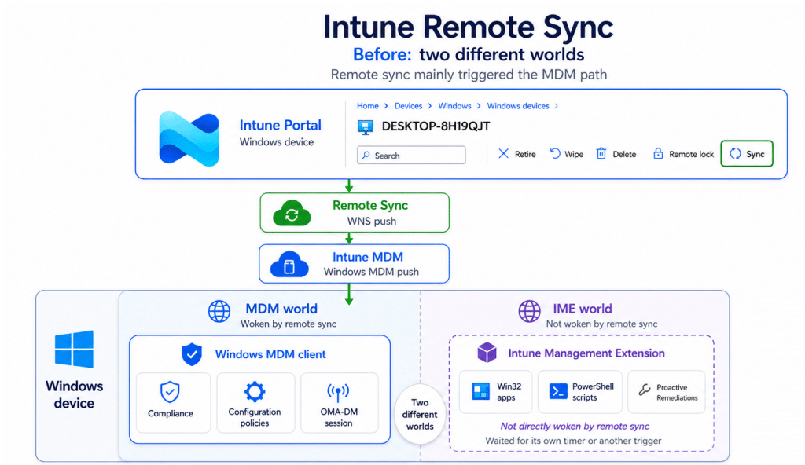

That clear separation explains why a new settings catalog policy could react quickly after a remote Sync, while a newly assigned Win32 application still appeared to wait. Both workloads belong to Intune, but they do not belong to the same Windows management client. Microsoft is widening what remote Intune Sync means.
Microsoft describes the improved on-demand sync action as a full synchronization across key workloads instead of waiting for their normal scheduled check-ins. It specifically calls out troubleshooting, incident response, and high-priority rollouts as scenarios where faster confirmation matters.
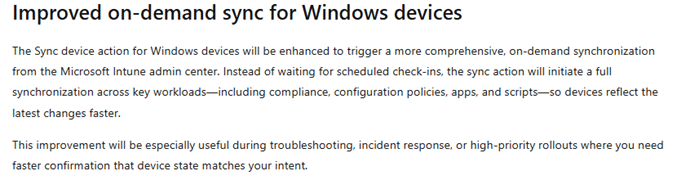

That announcement changes the architecture question. The action can no longer stop after waking only the Windows MDM client. Apps, scripts, and Remediations are owned by the Intune Management Extension, so the improved on-demand Sync needs a second client side path. The official note does not explain that plumbing. This blog does…
The Improved on-demand Sync Triggering the IME
After the improved on-demand Sync action was triggered, the Microsoft Windows Push Notifications Platform operational log showed two separate WNS notifications arriving on the device.
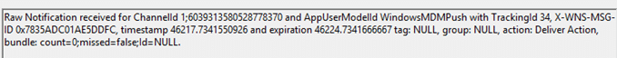

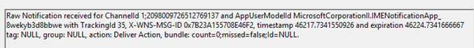

They were delivered approximately 458 milliseconds apart.
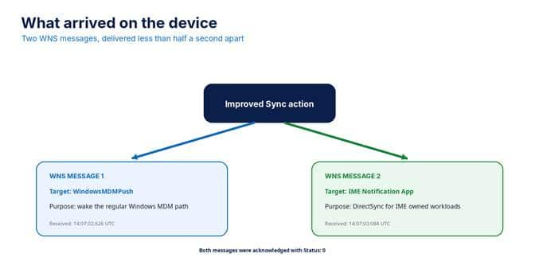

The first WNS message wakes the regular Windows MDM path
The first message targeted WindowsMDMPush. Its decoded inner payload contained a notification identifier, a version, and a timestamp. It did not contain configuration policy data. Its purpose was to wake the Windows MDM side so the device could begin its regular management session.
The second WNS message goes directly to IME
The second message targeted MicrosoftCorporationII.IMENotificationApp_8wekyb3d8bbwe. After decoding the hexadecimal event payload, the actual JSON showed a primary notification intent, a DirectSync value, and two additional workloads.
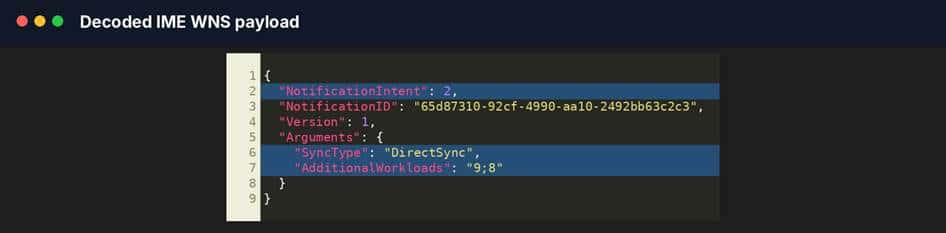

What 2, 9, and 8 actually mean
The numbers are defined by the SidecarNotificationActionType enum inside Microsoft.Management.Clients.IntuneManagementExtension.SidecarNotification.dll. The enum mapping turns the raw payload into a readable workload request.
With the IME tracker I build… I was already aware of this change…

| Payload value | Enum value | Meaning in this sync |
| 2 | Win32AppWorkload | Primary Win32 app check in |
| 8 | PowerShellScriptWorkload | Additional PowerShell script check in |
| 9 | ProactiveRemediation | Additional Remediation full sync |
| Important distinction DirectSync does not select the workloads. NotificationIntent selects the primary workload, while AdditionalWorkloads adds extra workloads. DirectSync is copied into the ClientContext passed to each selected workload. |
Where the WNS message enters the IME service
The first confirmed IME entry point is NotificationCallback in Microsoft.Management.Services.IntuneWindowsAgent.exe. Windows supplies the raw notification content through e.RawNotification.Content, and IME passes that string to DeviceActionCallbackAsync.
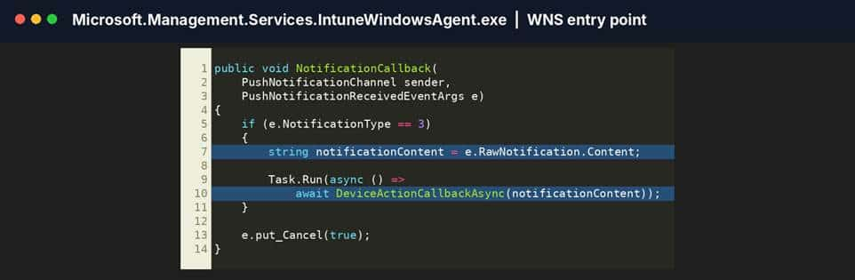

DeviceActionCallbackAsync parses the JSON into a SidecarNotificationPayload, checks configuration and throttling, refreshes the MDM certificate and service location when needed, and then creates a ClientContext from the notification.
The context stores the notification identifier, the primary intent, the notification check in reason, and the SyncType value. For the captured message, SyncType becomes DirectSync (improved on-demand sync).
How IME dispatches the workloads
IME first checks the EnableNotificationWorkloadDispatch ECS flight.

When that flight is enabled, TriggerAdditionalWorkloads processes the semicolon separated AdditionalWorkloads value. It validates the numbers, removes duplicates, skips the primary intent if it appears again, and calls the matching workload callbacks.
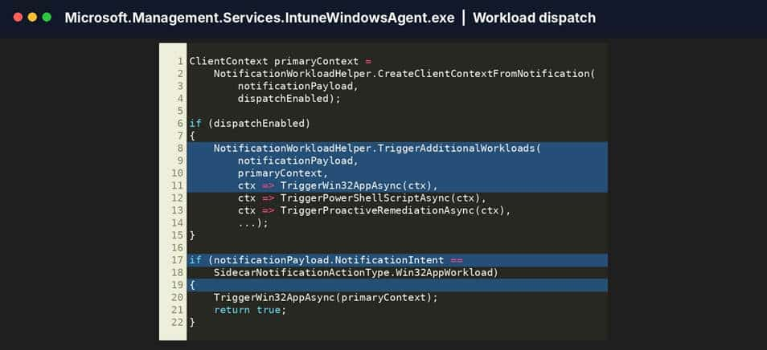

The distinction in this method matters. Additional workloads 9 and 8 do not cause the Win32 app check in. The Win32 app path is started by the separate primary intent check because NotificationIntent equals Win32AppWorkload.
Workload 8 calls TriggerPowerShellScriptAsync, which passes the ClientContext to PowerShellScriptPlugIn.ScriptPluginOnTimer. Workload 9 calls TriggerProactiveRemediationAsync, which passes the same context to PolicyPoller.ScheduleForNotification.
Where the Win32 app check in really starts
The primary intent check calls TriggerWin32AppAsync. That wrapper calls Win32AppCheckInAsync, which passes the same DirectSync ClientContext into Win32AppCoreAsync.
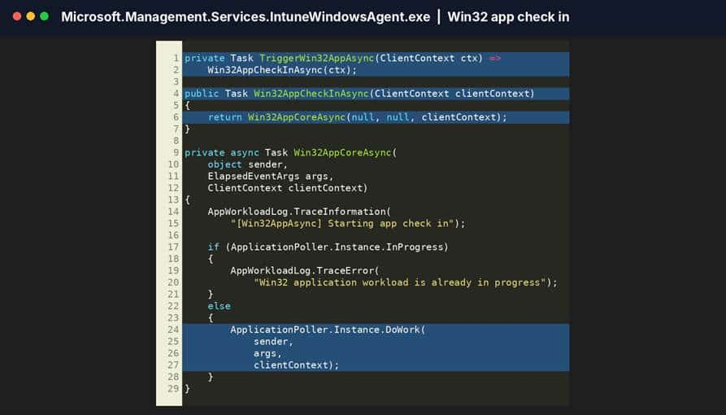

Win32AppCoreAsync writes the Starting app check in message and checks whether ApplicationPoller is already busy. When the poller is available, ApplicationPoller.Instance.DoWork is the handoff into the Win32 application engine.The complete client side DirectSync flow
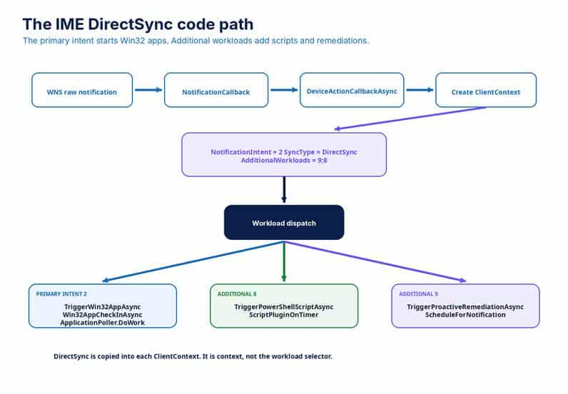

Figure 8. The observed IME notification creates one primary Win32 workload and two additional workload dispatches.
The complete flow is now much clearer. Windows receives the raw WNS payload. NotificationCallback forwards it to DeviceActionCallbackAsync. IME parses the payload and creates a DirectSync context.
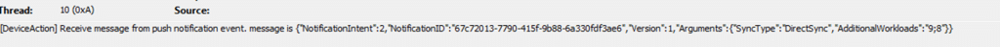

NotificationIntent 2 starts the Win32 app path. AdditionalWorkloads 8 and 9 start the PowerShell script and Proactive Remediation paths when notification workload dispatch is enabled.
At the same time, the separate WindowsMDMPush notification wakes the regular Windows MDM side. The broader result comes from coordinated client side paths, not from forcing every workload through one engine.
The Improved on-demand Sync in Action
This blog proves that the tested improved on-demand Sync action sent two WNS messages. One targeted WindowsMDMPush. The other targeted the IME notification application and contained a primary Win32 workload, additional PowerShell script and Proactive Remediation workloads, and a DirectSync SyncType.
The investigated IME code proves that these values are parsed and routed to TriggerWin32AppAsync, TriggerPowerShellScriptAsync, and TriggerProactiveRemediationAsync. Which kicks off the Win32AppCheck in

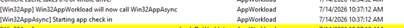

Once the Win32AppCheck is executed, the DirectSync will move to the Proactive Remediations (HealthScripts) and PowerShell Workloads


The Improved on-demand Sync Button
The old remote Windows Sync action mainly woke the MDM side of Intune. That was useful for configuration and compliance, but it did not directly force IME to check in from the Intune admin center.
The improved on-demand sync action changes that boundary. In the captured flow, one click caused Intune to send a normal Windows MDM push and a separate IME DirectSync push. The IME payload selected Win32 apps as its primary workload and added PowerShell scripts and Proactive Remediations to the same synchronization request.
That is the real improvement. The Intune Remote On-Demand Sync is no longer a single remote action that wakes only one Windows management client. It is becoming a coordinated synchronization across the MDM and IME sides of Intune.
For administrators, the Sync button should finally behave much closer to the way everyone assumed it already worked.